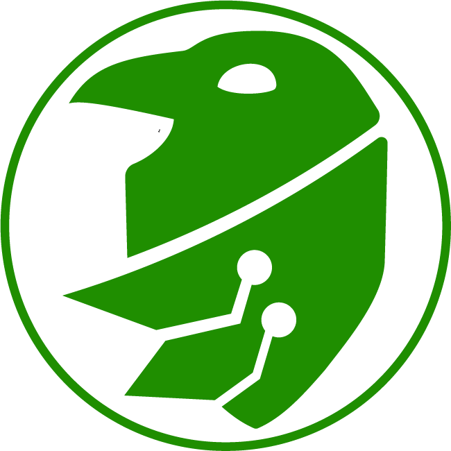

Auditing / Training / Assurance
Security with
purpose.
I’m Daniel, a cyber security auditor and trainer helping organisations turn standards into confident, everyday practice.

51.5074° N0.1278° W
01 / About
Make compliance
meaningful.
My focus is auditing and training: helping teams understand where risk lives, build evidence they can stand behind, and develop a security culture that works beyond the audit date.
02 / Capabilities
Clarity for the
hard questions.
01 Audit & assurance +
02 Training & culture +
03 Governance & implementation +
03 / Selected work
Security that
stands up.
Selected work across certification, audit, training, and the practical systems that make assurance sustainable.
01Cyber Essentials Plus CertificationAssurance+
Supported Cyber Essentials Plus certification engagements, coordinating third-party assessors and internal stakeholders while aligning policies, technical controls, and supporting evidence with the assessment criteria.
02Internal ISO 27001 AuditsAudit / Assurance+
Planned and delivered internal ISO 27001 audit activity, reviewing the effectiveness of controls, recording findings, and working with stakeholders to identify practical corrective actions and maintain readiness for external scrutiny.
03NCSC CAF AuditAudit+
Delivered recurring assessments against the NCSC Cyber Assessment Framework, evaluating security postures, documenting control gaps, and translating findings into prioritised recommendations to strengthen cyber resilience.
04Security Culture Diagnostic SurveyTraining / Culture+
Created an interactive diagnostic tool to assess security culture across different environments, examining process, compliance, automation, and trust. The survey turns qualitative attitudes into clear themes that support targeted improvement plans. Launch the survey
05Phishing Simulation & Targeted TrainingAwareness+
Established recurring phishing simulation and targeted awareness programmes, using test outcomes to focus training where it had the greatest value and improve employees’ ability to identify and report suspicious activity.
06Cyber Incident Reporting ProcessGovernance+
Designed and implemented structured cyber incident reporting processes across varied environments, giving teams a consistent way to capture, triage, monitor, and learn from security events while improving accountability and response readiness.
04 / Foundations
Always learning.
Always testing.
BSc (Hons) Cyber Security
Level 3 IT Support Technician
Dark Web, Anonymity, Privacy & Security Bootcamp
Ethical Hacking Bootcamp
Python Bootcamp
Skills before Stone
— decoded